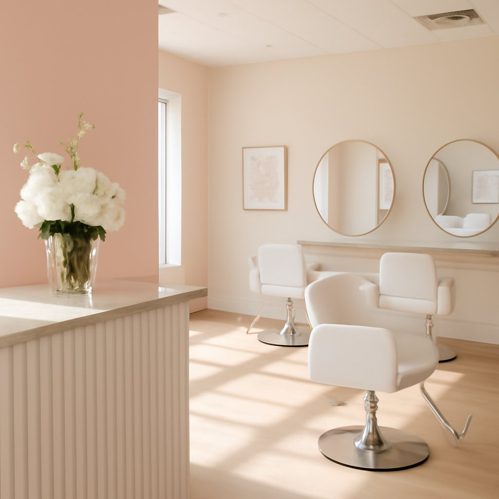

Our Story
Seven years of “I love this place.”
“I LOVE this place!! Been going for about 7 or 8 years. Great customer service.”
Blossom Salon was built on a simple idea: great beauty services shouldn't cost a fortune. The owner's philosophy — pay attention to each person's skin type, learn their needs, and never cut corners on quality or sanitation — has kept clients returning for nearly a decade.
Selected as one of Carrollton's Top 6 Beauty Salons, the team has earned a reputation that word-of-mouth alone can't fully explain. With 258 Google reviews averaging 4.7 stars — and clients who've been coming since day one — Blossom Salon is the kind of place you find once and never leave.